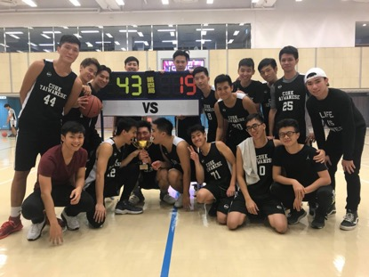

二零一七秋季籃球比賽
Hong Kong Taiwanese Student Association
Autumn Basketball Competition 2017
It was 8:30 in the morning. The university campus was quiet except for the occasional hurried steps of the morning commute, but the gymnasium at Block X was already stirring up. Inside the gymnasium, the sound of basketball shoes squeaking against the polished gym surface sang like an orchestra adjusting the tune before composing a symphony. The first two competing teams were already warming up on the floor, doing paces around orange cones and dribbling balls beside the baseline. A player from CUHK 2 dribbled a ball across the court. He stopped to aim. He shot. And he scored.
"Autumn Basketball Competition" is an annual competition organized by the Hong Kong Taiwanese Student Association. Usually held after the annual autumn gathering, this is an event for Taiwanese basketball team from different universities in Hong Kong to compete with one another. This year, the competition took place on November 18th, at the gymnasium of The Hong Kong Polytechnic University.
Six teams from five schools signed up for this year's game, namely the Chinese University of Hong Kong (CUHK 1 and CUHK 2), the Hong Kong University (HKU), the Hong Kong University of Science and Technology (HKUST), the City University of Hong Kong (City U) and the Hong Kong Polytechnic University (Poly U). The competition began at nine thirty with the first game being between CUHK 2 and HKUST. Both teams displayed vigorous morale, and performed the results of months of practice despite the common fatigue in the morning. After four intense periods, CUHK 2 defeated HKUST, last year's champion, and retreated to the benches with satisfying smiles.
As the matches went on, more teams have arrived at the gymnasium, bringing along excited spectators. The players recognized their formidable foes from last year's basketball competition and greeted each other with shoulder bumps and sly jokes. General managers sat in front of the scorer's table and recorded the points and the fouls, cheering for their respective teams. The girlfriends sitting in the bench area cheered for their loved ones dashing on the court. The competition brings together the Taiwanese students from six Hong Kong universities and fuses the bond between the students.
Out of the ten matches of the day, there was one particular match that brought out the enthusiasm of the entire gymnasium. It was the match between City U and Poly U. The teams from both universities had a rough start, barely making any scores during the first two periods. Poly U was very aggressive, taunting City U by the fast break tactic. However, City U was also very keen on their defenses. City U had many block shots and made consecutive successful three-pointers, giving Poly U a looming pressure. At the sight of this predicament, the bench-sitting players from Poly U stood up and cheered for their teammates. The general manager of City U saw the zealous crowd and rounded up the City U supporters. In merely seconds, the whole gymnasium was standing and cheering for their respective team. Both teams were equally matched, and the scores struggled to widen the gap. At the peak of the anxiety, every goal brought a roar from the bench area. During the last seconds of the fourth period, Poly U made two consecutive field goals and brought the exciting game to an end, saving the sideline chanters from exhaustion.
As night falls, the sidelines are thinning out after the teams who made it to the finals became more apparent. HKUST and City U lost both of their preliminary matches while the two teams from CUHK crushed their adversaries from HKU and Poly U and went into the final together. It is ironic to have the two teams from the same university to fight for the championship. They trained day and night under the same coach, practiced on the same court, and now they are competing against the players that they are most familiar with. Both teams were tired from playing basketball for the entire day, but CUHK 2 showed greater signs of fatigue. The turnover rates escalated dramatically. Field goal attempts failed miserably and most of the rebounds were taken by CUHK 1. The score gap widened as the game proceeded to its final period. Despite the resurgence of CUHK 2 after the players were switched, the lead was too great to overcome. The day ended with CUHK 1 winning 1st place; CUHK 2 as the first runner up; and HKU as the second runner up.

It was a rewarding day for the student to show their passion for playing basketball. Through sideline chant and dripping sweats, the Autumn Basketball Competition brings together the Taiwanese in these six universities, which builds lasting relationships and durable support for one another. Lastly, HKTSA hopes that the teams from Hong Kong Institute of Education and the Hong Kong Baptist University can join the annual basketball competition next time to enjoy this shared event of the Taiwanese students studying in Hong Kong.
article by Jhih Ping HUANG, photo by HKTSA